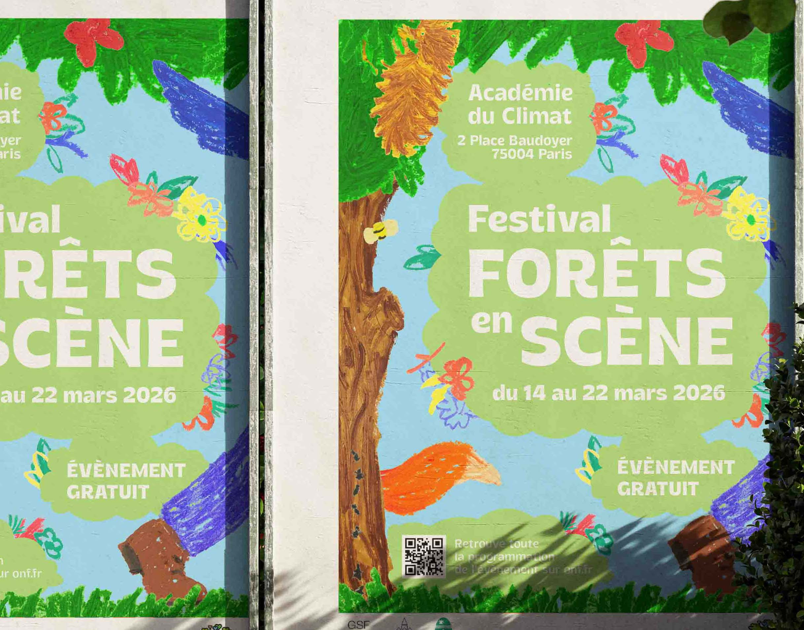
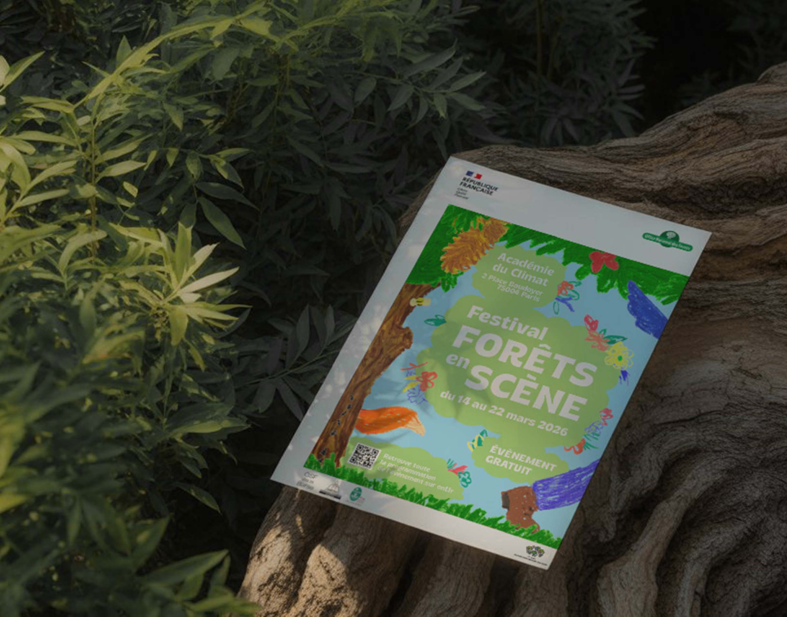
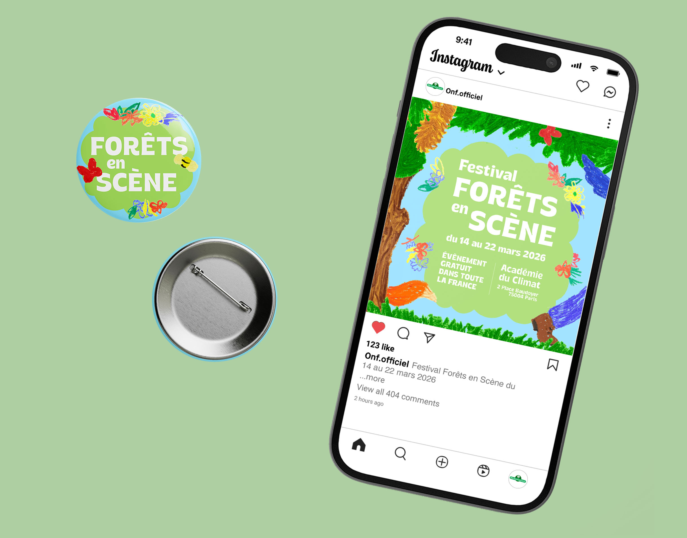
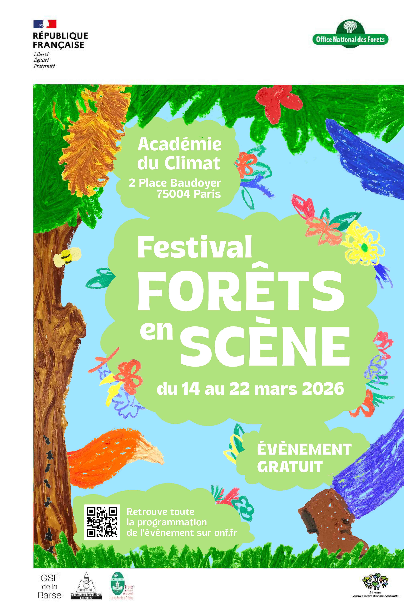
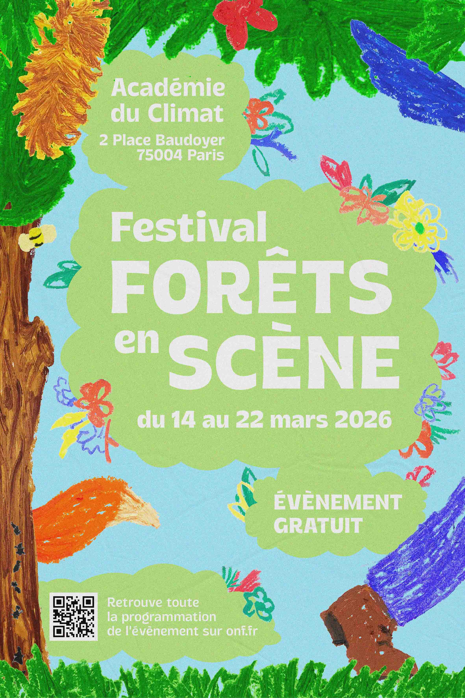
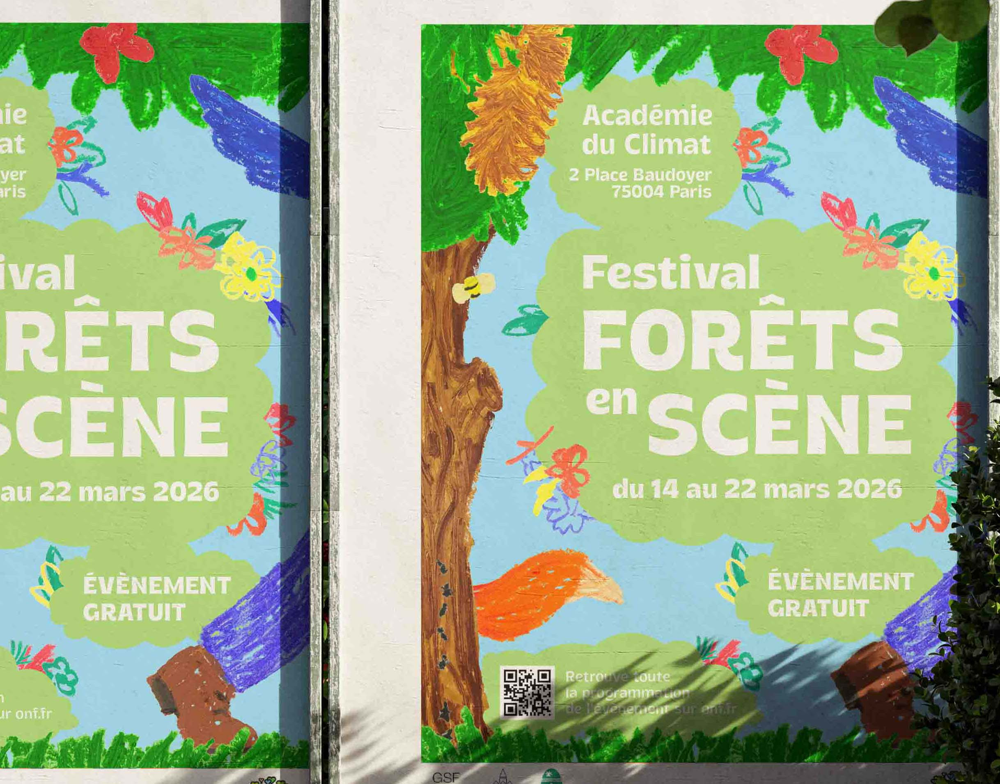
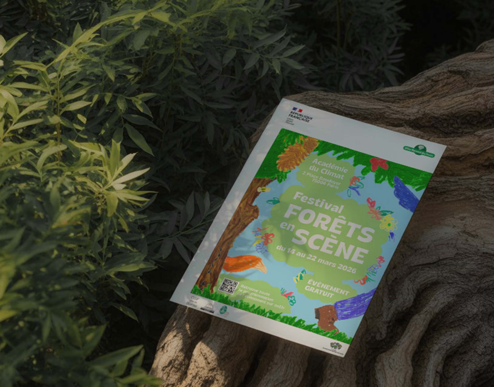
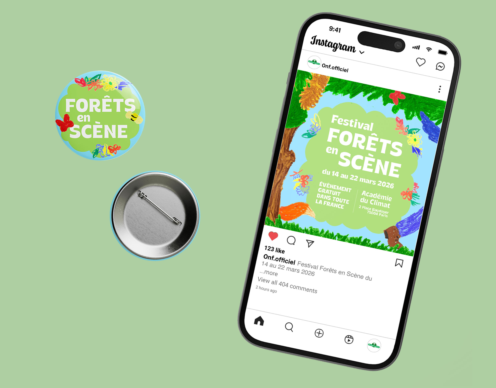
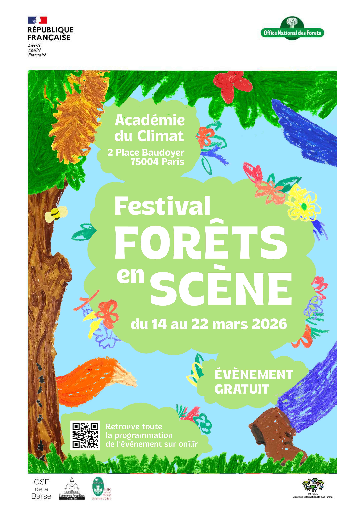
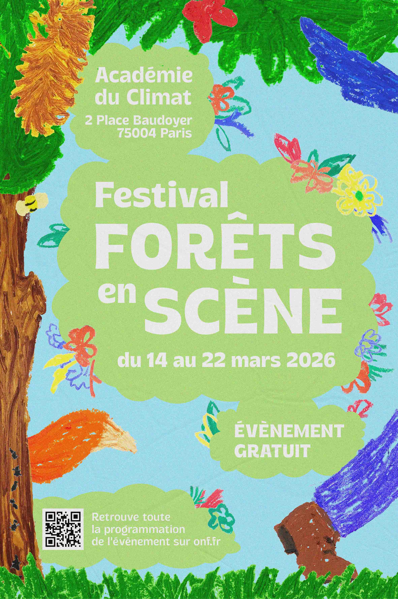

Participation, lors d’un stage en agence de communication, à la réalisation d’une Identité graphique, en partant d’une affiche, pour un appel d’offre publique de l’ONF. L’affiche devait être à l’occasion du festival annuel ; Forêts en Scène, un festival tous publics, à travers la France entière, et elle devait représenter l’ONF entant qu’organisme moderne et écologique.
Durant le suivi de ce projet j’ai pu réaliser de mon côté mes propres propositions d’affiches. L’identité que j’ai conçu et décliné, a pour but d’être accessible à tous, partout en France, ludique par ses couleurs et organique par sa texture, le tout pour représenter un festival animé et une forêt très vivante.
 








